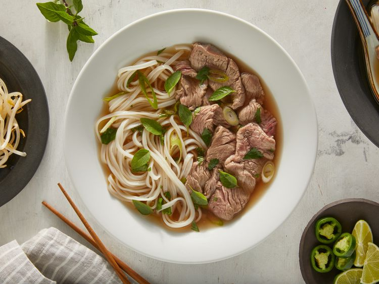

Pho (Vietnamese Noodle Soup)
Description
Craving warm, comforting pho? Well, then let us introduce you to the tastiest pho recipe on the internet. The key to this authentic Vietnamese soup is the flavorful broth that simmers for at least six hours before serving over rice noodles.
We promise, this soup is so worth the wait.
Ingredients list:
-
Beef Soup Bones
4 pounds beef soup bones (shank and knee)
Use the shank and knee to make the homemade bone broth.
-
Onion
1 medium onion, unpeeled and cut in half
Roast the onions for an extra depth of flavor.
-
Ginger
5 slices fresh ginger
-
Salt
1 tablespoon salt
-
Anise
2 pods star anise
-
Fish Sauce
2 ½ tablespoons fish sauce
-
Water
4 quarts water
-
Rice Noodles
1 (8 ounce) package dried rice noodles
You should be able to find dry rice noodles at most grocery stores, either in the international aisle or another pantry aisle.
-
Beef
1 ½ pounds beef top sirloin, thinly sliced
This recipe calls for beef top sirloin. Make sure it's thinly sliced so the hot broth can cook it.
-
Cilantro
½ cup chopped cilantro
-
Green onion
1 tablespoon chopped green onion
-
Sprouts
1 ½ cups bean sprouts
-
Thai basil
1 bunch Thai basil
-
Lime
1 medium lime, cut into 4 wedges
-
Hoisin sauce
¼ cup hoisin sauce (Optional)
-
Chile-garlic sauce
¼ cup chile-garlic sauce (such as Sriracha) (Optional)
Steps:
-
Gather all ingredients.
-
Preheat the oven to 425 degrees F (220 degrees C).
-
Place beef bones on a baking sheet and roast in the preheated oven until browned, about 1 hour.
-
Place onion halves on a second baking sheet and roast on another rack until blackened and soft, about 45 minutes.
-
Transfer beef bones and onion halves to a large stockpot. Add ginger, salt, star anise, fish sauce, and 4 quarts water; bring to a boil. Reduce heat to low and simmer for 6 to 10 hours. Strain the broth into a saucepan and set aside.
-
Place rice noodles in a large bowl filled with room temperature water. Let soak for 1 hour. Drain.
-
When noodles have soaked for 1 hour, heat up the reserved broth by bringing it to a simmer.
-
Bring a large pot of water to a boil. Cook the noodles in the boiling water for 1 minute. Drain.
-
Divide noodles among 4 serving bowls; top with sirloin, cilantro, and green onion. Ladle hot broth over the top. Stir and let sit until beef is partially cooked and no longer pink, 1 to 2 minutes.
-
Serve with bean sprouts, Thai basil, lime wedges, hoisin sauce, and chile-garlic sauce on the side.